We can best understand the loop invariant of method lengthOf if we check it against an execution trace of the method's invocation. Again, here is the method:
public int lengthOf(Cell l)
{ int length = 0;
Cell c = l;
while ( c != null )
// lengthOf(l) == length + lengthOf(c)
{ length = length +1;
c = c.getNext();
}
return length;
}
Say we have this list:
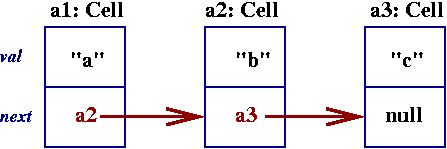and we wish to compute the result of lengthOf(a1). The method is entered, and upon entry to the loop, its variables like this:
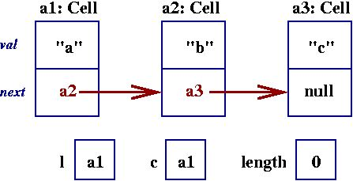We easily verify that the invariant holds after zero loop iterations:
lengthOf(l) == length + lengthOf(c)because length == 0 and lengthOf(a1) should, in principle, compute to 3.
The first loop iteration counts the leading cell of the list:
length = length +1; c = c.getNext();and we have
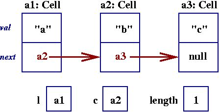and again, lengthOf(l) == length + lengthOf(c) holds, because length == 1 and lengthOf(a2) should compute to 2.
The next loop iteration gives us
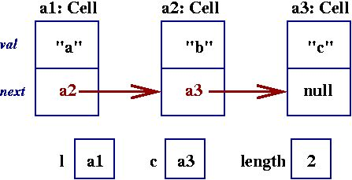and then we encounter
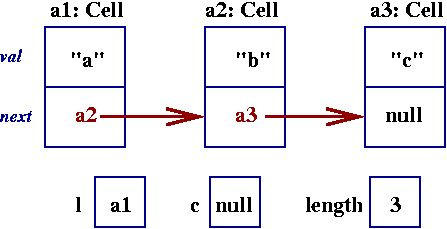Which causes the loop to halt. We confirm that
lengthOf(l) == length + lengthOf(c)because length == 3 and lengthOf(null) is of course 0.
/** lengthOf returns the length of list l */
public int lengthOf(Cell l)
{ int length;
if ( l == null )
{ length = 0; }
else { length = 1 + lengthOf(l.getNext()); }
return length;
}
And again, here is the list to be processed:
An execution trace of lengthOf(a1) must be drawn with the activation-record stack of the Java Virtual Machine. Here is the stack when the method starts:
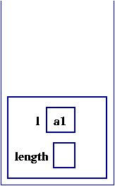 The activation record shows that list a1 must be counted. Because the list is non-null, the method's else-arm must be computed:
else { length = 1 + lengthOf(l.getNext()); }
This computes to
length = 1 + lengthOf(a2)The recursive invocation starts a new copy of lengthOf, and a second activation record appears:
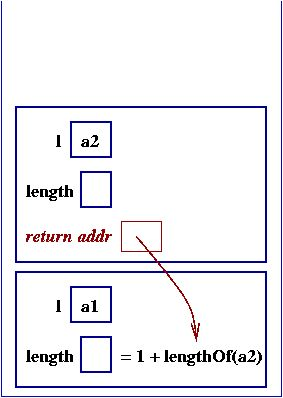 The picture shows that the result of calculating the length of list a2 will be returned to the calling method, which uses it to calculate the length of list a1.
Because a2 is non-null, the else-arm is again computed, generating a third recursive call:
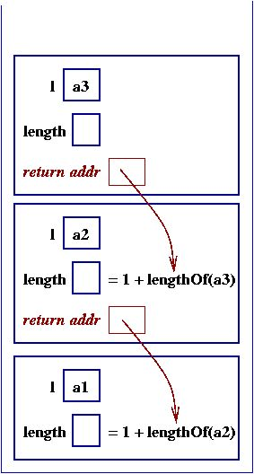 The pattern of recursions is now established, and the next recursion generates this stack:
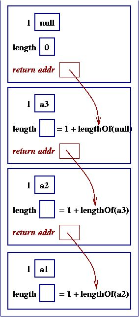 null denotes an empty list, which has length 0. The result, 0, is returned to its caller:
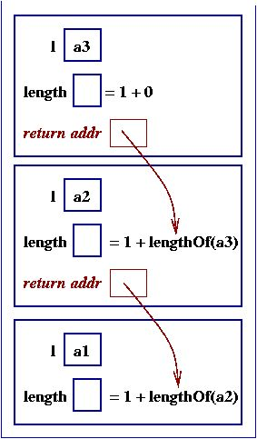 The caller can now compute the length of list a3 --- it is 1:
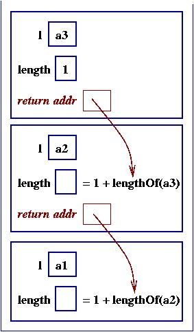 Now that a3's length is computed, it is returned to its caller:
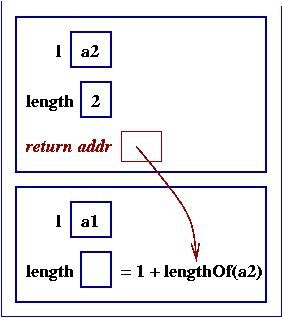 and finally, we have the result for a1:
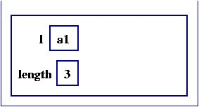
We do a kind of calculational arithmetic --- ``algebra'' --- on the method by drawing levels of recursion as a kind of stairstep:
initial invocation
|
+--> recursive invocation
|
+ --> another recursion
|
etc.
The ``steps'' represent the activation records on the JVM stack.
When a recursion returns an answer, we insert the answer at the
source of the stairstep arrow.
Once again, here is the three-celled list:
and here is the recursively defined method:
/** lengthOf returns the length of list l */
public int lengthOf(Cell l)
{ int length;
if ( l == null )
{ length = 0; }
else { length = 1 + lengthOf(l.getNext()); }
return length;
}
We will hand draw the computation history triggered by
lengthOf(a1):
lengthOf(a1) // start with initial invocation
|
| // draw underneath it the method's coding
+-> Cell l = a1; // write a variable declaration for the parameter
int length;
if ( l == null )
{ length = 0; }
else { length = 1 + lengthOf(l.getNext()); }
return length;
| // write computation steps one by one, if you wish:
V
Cell l = a1;
int length;
if ( false )
{ length = 0; }
else { length = 1 + lengthOf(l.getNext()); }
return length;
|
V
Cell l = a1;
int length;
length = 1
+ lengthOf(l.getNext());
return length; | // a recursion:
|
+-> Cell l = a2;
int length;
if ( l == null )
{ length = 0; }
else { length = 1
+ lengthOf(l.getNext()); }
return length;
|
V
Cell l = a2;
int length;
length = 1
+ lengthOf(l.getNext()); //B
return length; |
|
+-> Cell l = a3;
int length;
if ... // etc.
return length;
|
.
|
V
length = 1
+ lengthOf(l.getNext()); //A
return length; |
|
+-->
Cell l = null;
int length;
if ( l == null )
{ length = 0; }
return length;
|
V
return 0;
At this point, the 0 is returned to the source point of the invoking
stairstep arrow (see the line marked //A).
This causes length at point //A to compute to 1, which is returned to point //B. In this way, we can track by hand the progress of the recursions without confusing the multiple copies of local variables, length.